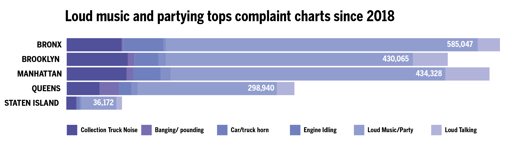
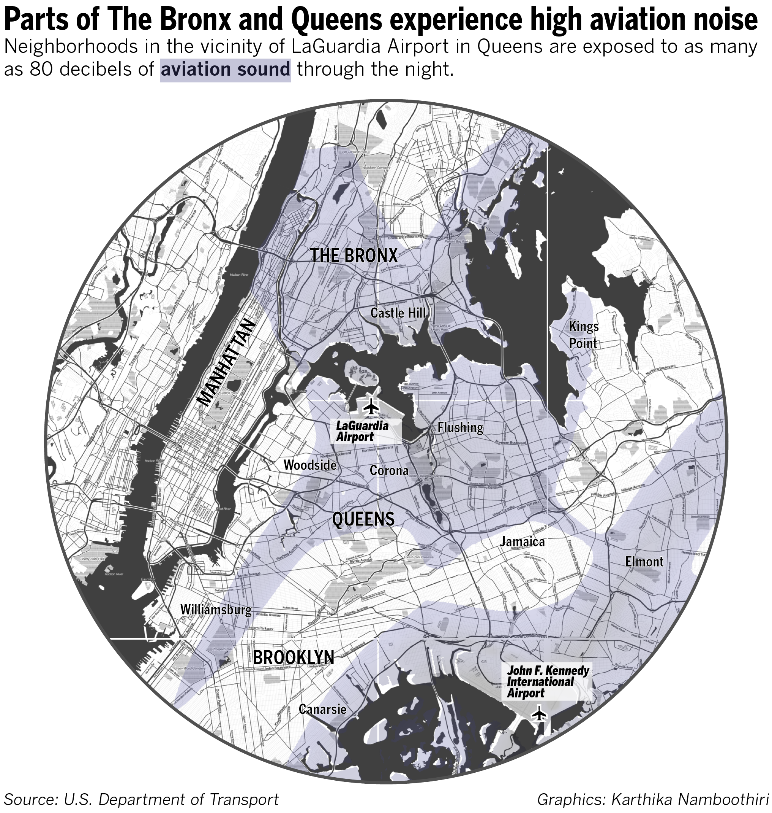

Anyone who has spent at least 24-hours in any of New York’s five boroughs will tell you it’s a noisy place. Noise is the top reported complaint on the city’s catalog, and not the top priority calls the police responds to. Nearly one in six adults in the city have hearing loss or experience ringing in the ears, according to the city’s health website.
Yet, the city does not measure noise data.
For a place that diligently keeps record of squirrel census data in Central Park and yellow taxi fares and trips, it surprises me that the New York City government has no way of determining how much noise, in decibels, a person in any of the five boroughs is potentially exposed to.
In fact, it relies heavily on the 311 noise complaints made by disgruntled callers. To take a quick look at that data, most complaints over the last five years came from The Bronx, and the most frequent complaint was against loud music and parties. There have been more than 7,000 complaints made about ice cream trucks, and over two hundred thousand calls complaining about people talking loudly.
In 2018, a state report assessing the risk of noise pollution in New York City’s neighborhoods assessed the 311-complaint database to determine further policy action. However, the database limits our understanding of who is most exposed to loud noise. Instead, it only indicates where people are most likely to file a complaint. Often people who are most frequently exposed to noise pollution and bear its consequences belong to minority communities who distrust law enforcement agencies to report a complaint. Many people simply do not want to.
But it’s certainly from the streets
Noise from airplanes, overhead rattling subway cars and honking vehicles is certainly the worst contributor to the chaos. Bronx’s large list of loud party complaints seem trivial in comparison to Manhattan’s street traffic—although Castle Hill and Clason Point, two neighborhoods in East Bronx are often subject to as much as 72 decibel of aviation noise from LaGuardia airport at any given time in the day. For context, a blender can be as loud as 90 decibels.
The Port Authority of New York and New Jersey records noise levels in select residential neighborhoods situated around major airports, and displays them live on its interactive platform. It also receives aviation related noise complaints from the public, although this data is not available. Another agency that helps us understand noise exposure is the Department of Transport which assesses neighborhood exposure to road, railway and aviation noise.
In summary, it is critical to estimate how much noise, in decibels, the average person is exposed to. While various city legislations have attempted to curb construction, helicopter landing and car music noise levels, it is critical to find more accurate methods to measure urban noise, and learn who is most impacted by it.